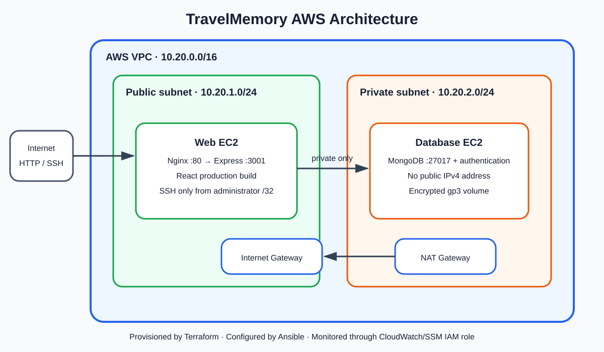

1. Executive Summary
This implementation deploys the required TravelMemory MERN application on AWS. Terraform provisions the network, security boundaries, IAM role, and two Ubuntu EC2 instances. Ansible then installs and secures MongoDB, installs Node.js and Nginx, builds React, configures Express, and verifies the running service.
2. Architecture and Component Interaction

- The browser requests the web server's Terraform output URL over port 80.
- Nginx serves the optimized React build and reverse-proxies
/tripand/helloto Express on loopback port 3001. - Express/Mongoose authenticates as the least-privilege
travel_appuser and connects to MongoDB over the VPC private address. - MongoDB persists travel records and returns them through Express, Nginx, and React.
3. Terraform Infrastructure
| Requirement | Implementation | Status |
|---|---|---|
| AWS initialization | AWS provider 5.x, configurable region/profile, default project tags | Implemented |
| VPC and subnets | 10.20.0.0/16 VPC, public 10.20.1.0/24, private 10.20.2.0/24 | Implemented |
| Internet/NAT gateways | Internet Gateway for public routing; NAT Gateway and Elastic IP for private outbound updates | Implemented |
| EC2 instances | Official Ubuntu 22.04 AMI; public web host and private MongoDB host | Implemented |
| Security groups | Web SSH restricted to administrator CIDR; HTTP public; MongoDB/SSH accepted only from web SG | Implemented |
| IAM roles | EC2 instance profile with SSM core and CloudWatch Agent managed policies | Implemented |
| Outputs | Web public IP, application URL, private addresses, generated inventory path | Implemented |
Both instances require IMDSv2, use encrypted gp3 root volumes, and enable detailed monitoring. Terraform generates the Ansible inventory after instance creation. The private host's inventory entry uses the web server as an SSH bastion.
4. Ansible Configuration and Deployment
Common role
Installs baseline packages, enables unattended security updates, disables direct root and password SSH login, and sets deny-by-default UFW policy.
MongoDB role
Installs MongoDB 7 from the signed official repository; binds only to loopback and the private address; enables authorization; creates separate administrator and application users; and permits SSH/MongoDB only from the web server. Passwords stay outside Git and are suppressed from Ansible logs.
Web role
Installs Node.js 20, NPM, and Nginx; creates an unprivileged account; clones TravelMemory; installs locked dependencies; builds React; and runs Express as a hardened systemd service. Nginx handles public traffic and React route fallback.
5. Security Hardening
- No public IPv4 address or direct Internet ingress exists for MongoDB.
- Security groups and UFW independently enforce minimum network access.
- MongoDB authorization is enabled and the application account has only
readWriteon its database. - SSH is key-only, root login is disabled, and public SSH is restricted to a supplied
/32CIDR. - Secrets, PEM keys, generated inventory, variable files, and Terraform state are excluded from version control.
- The backend is not publicly exposed on port 3001 and runs under an unprivileged system account.
6. Deployment Procedure
- Authenticate AWS CLI and create/select an EC2 key pair in the deployment region.
- Copy
terraform.tfvars.exampletoterraform.tfvarsand provide region, restricted administrator CIDR, key-pair name, and PEM path. - From WSL/Linux, execute
scripts/deploy.sh. It generates local secrets, initializes/validates/applies Terraform, installs the Ansible collection, runs all roles, and checks the backend. - Open the printed application URL, add an experience, run
scripts/validate.sh, and collect evidence. - After assessment, execute
scripts/destroy.shto stop all EC2, public IPv4, and NAT Gateway charges.
7. Testing and Acceptance Criteria
| Check | Expected result |
|---|---|
| Terraform validation/apply | No validation errors; two instances created; application URL printed |
| Ansible recap | Zero failed and zero unreachable hosts |
| Frontend | React root HTML and TravelMemory interface load from public IP |
| Backend | /hello returns Hello World! through Nginx |
| Database path | /trip/ returns data and a submitted experience persists |
| Isolation | Database has no public IP; ports 3001/27017 are unavailable from the Internet |
8. Evidence Register
The architecture diagram and real application screenshots are included with the submission. The verified deployment URL was http://13.233.113.78; the final Ansible run completed with zero failed or unreachable hosts, and the sample Incredible India record persisted through MongoDB.
9. Limitations and Production Improvements
HTTP is used because no domain or TLS certificate was supplied. One Availability Zone and one database instance do not provide high availability. A production revision should add Route 53, ACM/HTTPS via an Application Load Balancer, multi-AZ instances, backups/snapshots, centralized secret storage and rotation, alarms, and automated application tests.
10. Conclusion
The repository covers every stated infrastructure and configuration requirement with repeatable automation and layered security. The deployment can be recreated from source, validated through defined health checks, documented with genuine evidence, and fully destroyed to control cost.